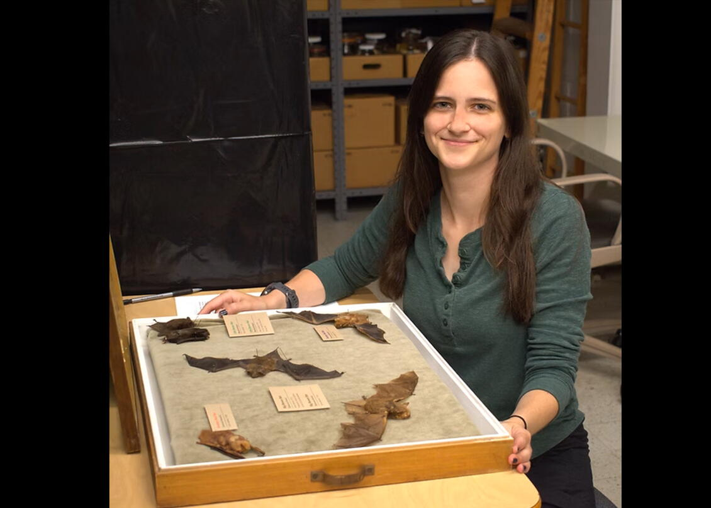
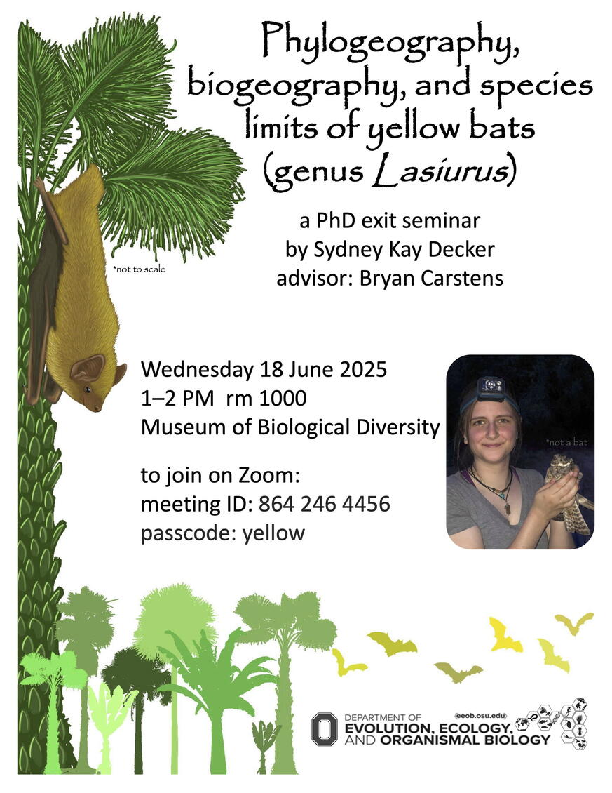

Sydney Decker isn’t afraid of the dark—especially when it arrives with wings. On June 18, she defends her Ph.D. at The Ohio State University, marking a major milestone in a career driven by curiosity, quantitative thinking, and a love for the world’s most misunderstood creatures: bats.
Decker, a researcher in the Department of Evolution, Ecology and Organismal Biology (EEOB), was first introduced to bat biology during her undergraduate studies, earning a research scholarship, and getting paired with a faculty mentor specializing in bat evolution. That partnership sparked what would become nearly a decade of research into the evolutionary innovations and ecological diversity of bats.
“After learning about the evolutionary innovations and ecological diversity in bats, I decided to continue studying them throughout my undergraduate degree and for my PhD research,” Decker said. “Evolution is arguably the most complex process that can be studied, so I wanted to ensure I was making the most of the data I could collect and using sound data practices throughout my research.”
She found a strong ally in data science. From bioinformatics to statistics and computational methods, Decker has applied a broad array of skills to her work with genomic, image-based, micro-CT, and environmental data—not just in bats, but across multiple species.
Her collaborations with the Imageomics Institute, a National Science Foundation Harnessing the Data Revolution initiative, allowed her to explore how machine learning could help unlock biological insights from large datasets.
“The Imageomics Institute has been a great source of support, a sounding board for ideas, and has helped me build my computational skills beyond what I could accomplish on my own,” Decker said.
While in school, she also received institutional support through an Ohio State AGGRS research grant and a data science sponsorship from the Erdős Institute rounding out a doctoral experience that blended museum science, fieldwork, and advanced computation.
Now equipped with skills in bioinformatics, statistics, and data science—and experience working across a spectrum of data types—Decker is ready to soar into her next role in research or applied science after graduation.
“I feel that I could add a lot of value, particularly in data science, bioinformatics, and research roles,” she said.
You are invited to Decker's Ph.D. exit seminar on Wednesday, June 18 between 1-2 p.m. ET. Remote and in-person attendance is available. Please see attached flyer for zoom link and more information.
